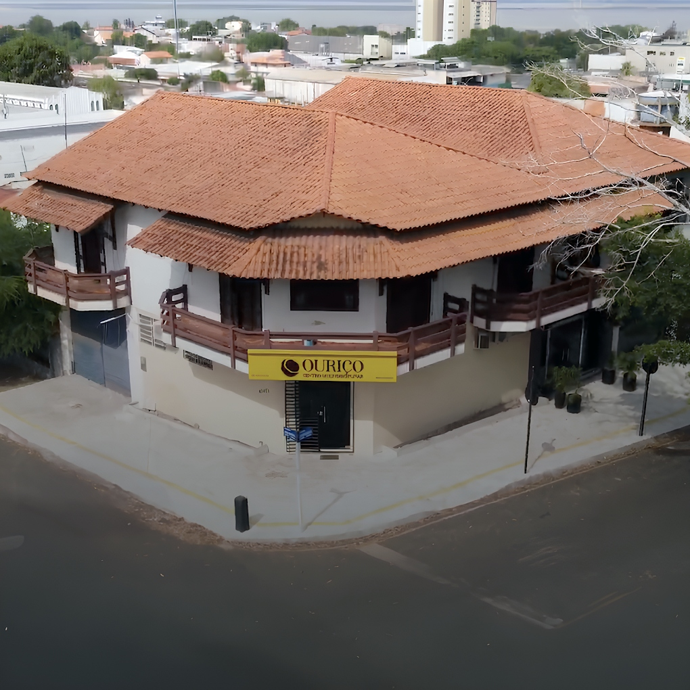
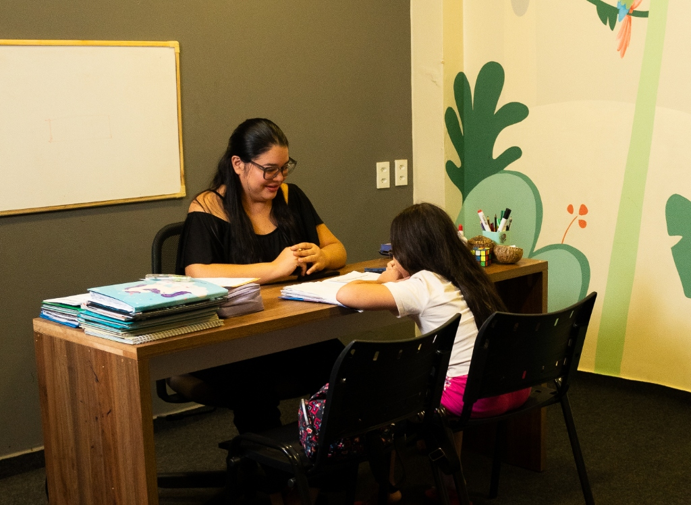

Quem é o Ouriço?
Somos um Centro Multidisciplinar que atua como parceiro da família e da escola. O nome Ouriço representa a estrutura que protege e nutre, assim como acreditamos que deve ser o processo educacional.

Metodologia Construtivista & Educação 5.0
Acreditamos que cada aluno aprende de forma única. Nossa abordagem coloca o estudante como protagonista do seu aprendizado, com atendimento individualizado.
Saiba mais
Principais Serviços
Oferecemos suporte completo para o desenvolvimento acadêmico e pessoal do seu filho:
- Acompanhamento Pedagógico
- Reforço Escolar
- Acompanhamento Escolar
FAQ
Qual a faixa etária atendida?
Atendemos da educação infantil ao ensino fundamental, adaptando a abordagem para cada fase do desenvolvimento.
Qual a metodologia utilizada?
Utilizamos uma abordagem baseada no Construtivismo e na Educação 5.0, focando no aprendizado ativo, personalizado e no desenvolvimento integral (socioemocional e cognitivo) do aluno.
Qual o tempo de duração da aula?
As aulas têm duração padrão de 60 minutos, dependendo do plano pedagógico traçado para a necessidade específica do aluno, garantindo tempo para foco sem causar exaustão.
As aulas são todo dia?
As aulas vão de acordo com os planos de 2, 3 ou 5 vezes na semana, conforme a avaliação inicial.
Como agendar uma avaliação?
Você pode agendar uma visita ou uma conversa inicial diretamente pelo nosso WhatsApp (93) 99190-7710 ou clicando no botão "Fale conosco" aqui no site.